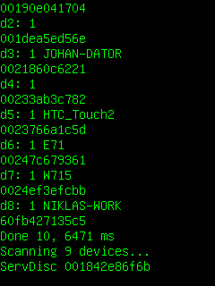
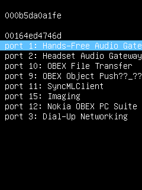

This example application demonstrates how to scan for Bluetooth devices and services, store the results in a database, display a list of services, and connects to one of them.
|  |  |
This example is included in the MoSync SDK installation in the /examples folder. For information on importing the examples into your workspace, see Importing the Examples.
The application scans for nearby Bluetooth devices and services, stores the results in a database, displays a list of services, and connects to one of them. The user can start to scan for Bluetooth devices by pressing '5'. When the scan is completed a list of the discovered devices and their corresponding MAC addresses is presented. The user can at any time abort the scan by pressing 0. When the scan is complete, each of the discovered devices will be searched for Bluetooth services. Finally, a list of services will be presented for each device.
When the device and service scan is completed the user can test the different services by pressing the fire key. A menu containing the discovered devices and their corresponding services can be shown by pressing the Fire key. The user can test a service on a particular device by navigating with the Up and Down keys and pressing the Fire key, the emulator then tries to connect to the selected service. Note that all devices and services might not fit on the screen, by pressing Up or Down at the ends a new batch of devices will be shown.
No touch support is provided in this application.